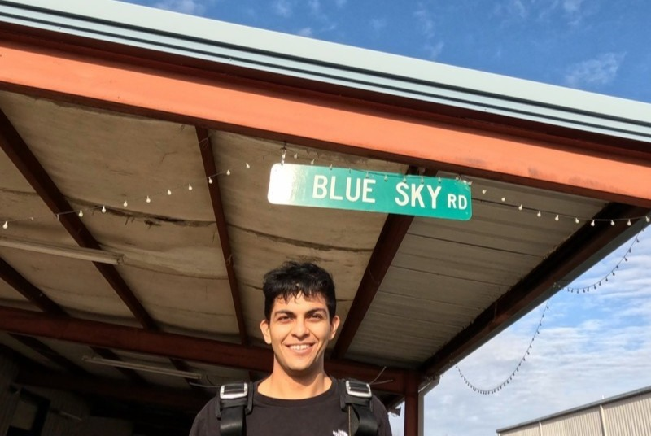

I build systems that make decisions. Industrial & Systems Engineering senior at NC State turning messy logistics data into optimization models, planning tools, and resilient infrastructure research.
18 months at UPL across three rotations, now building in Dr. Rachunok's Sustainable & Resilient Systems Lab. Open to operations research, network design, and supply chain optimization roles from January 2027.

500K+ data points → personalised annual health story. Time series decomposition, anomaly detection, LLM narrative generation.
Compare Spotify playlists against local DJ libraries. Flags missing tracks, auto-generates catch-up playlists via fuzzy matching + OAuth.
@ UPL NA — 63K+ annual orders, 538 SKUs. Python pipeline for regional demand, service gaps, and inventory positioning trade-offs.
Verified attendance for NC State using TOTP codes + campus WiFi RADIUS validation. Submitted to OIT and DELTA.
Lowe's Companies
Procurement Intern · Charlotte, NC (Incoming)
Sustainable & Resilient Systems Lab
Undergraduate Researcher · Dr. Rachunok · NC State
UPL NA
Supply Chain & Manufacturing Co-Op · 3 Rotations · Cary, NC
David Phillips
Supply Chain Intern · London, UK
Senior at NC State studying Industrial & Systems Engineering with a focus on operations research and ML for logistics. I care about the intersection where mathematical optimization meets messy real-world data.
Outside work: USSF Regional Referee (2000+ matches — ECNL, MLS Next, USL2), certified soccer coach, and DJ / music producer. GPA: 3.77. Graduating December 2026. Long-term target: PhD in Operations Research (target start Fall 2028, applying Fall 2027)
2+ years at UPL NA working on real supply chain systems. Not just academic theory — I've optimized actual warehouse networks handling 63K+ orders.
I speak both Python and supply chain. Can translate business problems into mathematical models and explain results to stakeholders.
Active researcher in sustainable systems lab. I bring academic rigor to industry problems — and industry pragmatism to research.
What I use to solve problems
Looking for OR Analyst / Supply Chain Optimization roles. Reach out anytime.